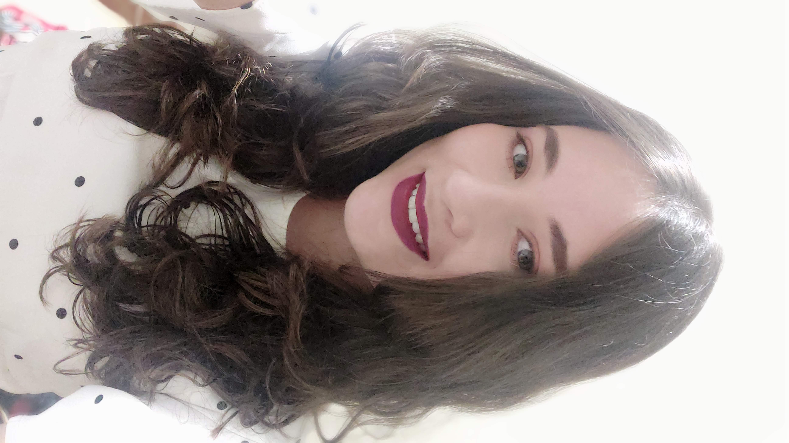
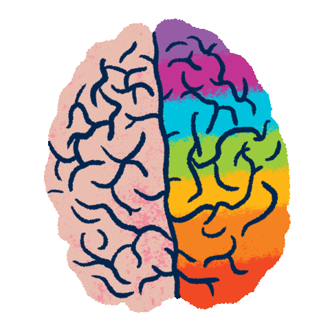

Beatriz Ceschini
Desenvolvedora Full Stack Júnior
- 
-

Sobre
Bem-vindo(a) a minha página!
Estou em processo de formação para me tornar Full Stack Developer.
Sou formada em Design de Moda mas
estou realizando transição de carreira.
Meu objetivo principal na vida sempre foi construir uma carreira
consolidada e minha personalidade questionadora, criativa e analítica me fez começar a estudar
desenvolvimento e me apaixonar pela profissão.
Atualmente estou participando do programa DEVinHouse em
parceria com a house Audaces. Simultaneamente estou participando do programa Desenvolve 2023 do Grupo
Boticário em parceria com a Alura para formação de profissionais de tecnologia.